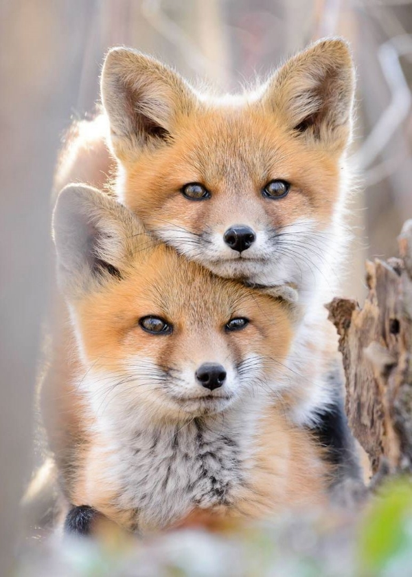

О себе
Мирошник Мария Леонидовна - 6201-020302D. Родилась в г. Самара, 24.12.2004.
Увлекаюсь рисованием, писательством, программированием, кулинарией.
Какие фильмы мне нравятся
- Джентельмены
- Притворись моей женой
- Гордость и предубеждение
- Один дома
- Камаз
- Записки Джульетты
Какая музыка мне нравится
Я не помню жанры, простите.
- Djinotan
- XOLIDAYBOY
- Ilya Polyakov
- Lana Del Rey
- Green Apelsin
- Melanie Martinez
Как связаться со мной
